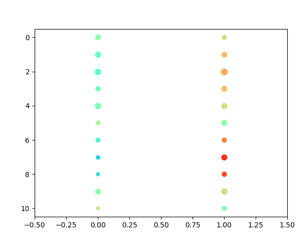

select.expr.Tcell.exh.module.bubble.dec27
import sys
import os
import re
import numpy as np
from operator import itemgetter
from scipy.stats import ttest_ind, ks_2samp, mannwhitneyu, kruskal
import matplotlib.pyplot as plt
def read_gsm(n):
f = open(n)
by_query = {}
q = None
queries = []
for l in f:
l = l.rstrip("\n")
if l.startswith("Query"):
q = l.split(" ", 1)[1]
queries.append(q)
by_query.setdefault(q, [])
continue
ll = l.split()
g = ll[0]
pval1 = float(ll[1])
pval2 = float(ll[2])
avgexpr_h = float(ll[3])
avgexpr_l = float(ll[4])
a_mean = float(ll[5])
by_query[q].append((g, pval1, pval2, avgexpr_h - a_mean))
f.close()
return by_query, queries
def read_list(n):
m = []
f = open(n)
for l in f:
l = l.rstrip("\n")
m.append(l)
f.close()
return m
if __name__=="__main__":
EA = read_list("../curated.ea.list")
AA = read_list("../curated.aa.list")
EA_list = {}
AA_list = {}
queries = []
for sample in EA:
EA_list[sample], queries = read_gsm(sample)
for sample in AA:
AA_list[sample], queries = read_gsm(sample)
genes_x = ["CD8A", "CD3D", "TRBC2", "LAG3", "HAVCR2", "CXCL13", "GZMB", "BATF", "CCL3", "CSF1", "TIGIT"]
print(queries)
by_gene = {}
percent_expressed = np.empty((len(genes_x), 2), dtype="float32")
scaled_expression = np.empty((len(genes_x), 2), dtype="float32")
for qind, qid in enumerate([2]):
for ix,q in enumerate(queries):
by_gene_EA = {}
for sample in EA:
for g, i, j, a in EA_list[sample][q]:
by_gene_EA.setdefault(g, {})
by_gene_EA[g].setdefault(sample, 0)
by_gene_EA[g][sample] = a
by_gene_AA = {}
for sample in AA:
for g, i, j, a in AA_list[sample][q]:
by_gene_AA.setdefault(g, {})
by_gene_AA[g].setdefault(sample, 0)
by_gene_AA[g][sample] = a
if ix == qid-1:
for gi,g in enumerate(genes_x):
sam_EA = []
sam_AA = []
nonzero_EA = 0
nonzero_AA = 0
for s in EA:
if g not in by_gene_EA or s not in by_gene_EA[g]:
sam_EA.append(0)
else:
sam_EA.append(by_gene_EA[g][s])
nonzero_EA+=1
for s in AA:
if g not in by_gene_AA or s not in by_gene_AA[g]:
sam_AA.append(0)
else:
sam_AA.append(by_gene_AA[g][s])
nonzero_AA+=1
percent_expressed[gi, qind*2] = nonzero_AA/len(sam_AA)
percent_expressed[gi, qind*2+1] = nonzero_EA/len(sam_EA)
total_expr = np.sum(sam_EA) + np.sum(sam_AA)
total_len = len(sam_EA) + len(sam_AA)
scaled_expression[gi, qind*2] = np.mean(np.array(sam_AA) / total_expr * total_len)
scaled_expression[gi, qind*2+1] = np.mean(np.array(sam_EA) / total_expr * total_len)
print(np.mean(np.array(sam_AA) / (total_expr/(len(sam_EA) + len(sam_AA)))))
print(np.mean(np.array(sam_EA) / (total_expr/(len(sam_EA) + len(sam_AA)))))
print(g + "\t" + "mean" + "\t" + str(np.mean(sam_AA)) + "\t" + str(np.mean(sam_EA)) + "\n")
sys.stdout.write(g + "\t" + "\t".join(["%.5f" % x for x in sam_AA]) + "\t|" + "\t".join(["%.5f" % x for x in sam_EA]) + "\n")
sys.stdout.write(g + "\t" + str(np.std(sam_AA)) + "\t" + str(np.std(sam_EA)) + "\n")
# Create a figure and a grid of subplots
fig, ax = plt.subplots()
# Create the bubble plot with circular markers
for i in range(percent_expressed.shape[0]):
for j in range(percent_expressed.shape[1]):
size = percent_expressed[i,j] * 100
#color = 'red' if fold_changes[i, j] > 0 else 'blue'
print(genes_x[i], j, size, scaled_expression[i,j])
ax.scatter(j, i, s=size, c=scaled_expression[i,j], cmap="rainbow", vmin=0, vmax=1.74, marker='o') # Ensure marker is 'o' for circles, vmax=0.06
# Setting the plot limits
ax.set_xlim(-0.5, percent_expressed.shape[1]-0.5)
ax.set_ylim(-0.5, percent_expressed.shape[0]-0.5)
# Invert the y-axis to have the first row at the top in the plot
ax.invert_yaxis()
# Show plot
plt.show()
Running Command
python3 select.expr.Tcell.exh.module.bubble.dec27.pyResults
